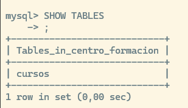
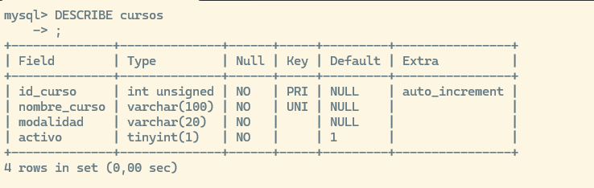
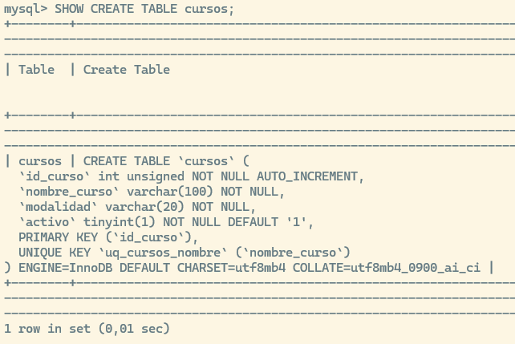
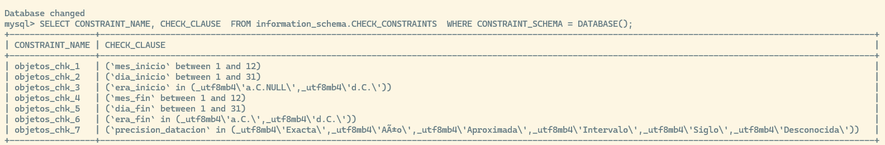

Donde centro_formacion es el nombre de la base de datos
DEFAULT CHARACTER SET utf8mb4 significa que admite caracteres Unicode standard
DEFAULT COLLATE utf8mb4_0900_ai_ci define reglas de comparación y ordenación.
ai significa insensible a los acentos “accent insensitive” (Ej. María = Maria)
ci significa case insensitive, que es que es insensible a las mayusculas o minisculas (ej. MARIA = Maria)
Estas definiciones de la base de datos serán la configuración por defecto para las tablas que se creen en ella, pero pueden sobreescribirse en las tablas.
En cualquier momento podemos ver cómo se creó la base de datos usando el comando SHOW CREATE DATABASE {nombre base de datos}
CONSTRAINT pk_cursos PRIMARY KEY (id_curso) esto define la clave primaria bajo el nombre pk_cursos
CONSTRAINT uq_cursos_nombre UNIQUE (nombre_curso) esto añade una restricción al campo nombre_curso para que no admita duplicados, guardamos esta regla bajo el nombre uq_cursos_nombre
2.1 Ver las tablas de la base de datos donde estamos
SHOW TABLES;

2.2 Ver la definición de la tabla que acabamos de crear:
DESCRIBE cursos;

2.3 Ver los comandos con los que se creo la tabla
SHOW CREATE TABLE cursos;

3 Restricciones de Integridad (Constraints)
Las restricciones (constraints) son reglas aplicadas a las columnas o tablas de una base de datos para garantizar la precisión, fiabilidad e integridad de los datos. MySQL evalúa estas restricciones en tiempo de ejecución de manera inmediata al ejecutar sentencias como INSERT o UPDATE.
Si en una operación que afecta a múltiples registros (como un UPDATE multirregistro) una sola fila viola una restricción, toda la operación se cancela automáticamente (rollback) y no se modifica ninguna fila.
3.1 Tipos de Restricciones
Existen diferentes tipos de restricciones que se pueden definir al crear o modificar una tabla:
NOT NULL: Obliga a que una columna siempre contenga un dato. Si en un INSERT se omite una columna definida como NOT NULL (y que no tiene un valor DEFAULT), MySQL lanzará un error indicando que el campo no puede ser nulo.
UNIQUE: Garantiza que todos los valores de una columna sean distintos. Si se intenta insertar un valor duplicado en una columna marcada como UNIQUE, MySQL abortará la operación por duplicidad de clave.
CHECK: Valida que los datos cumplan una condición lógica específica. Si un valor infringe un CHECK (por ejemplo, intentar guardar un mes_inicio igual a 13), la inserción se cancela con un error.
PRIMARY KEY: Identifica de forma única cada fila de la tabla. Es el equivalente a combinar NOT NULL y UNIQUE.
FOREIGN KEY: Asegura la integridad referencial vinculando los datos de una columna con la clave primaria de otra tabla.
3.1.1PRIMARY KEY (Clave Primaria)
Garantiza que cada fila sea única e identificable. No permite valores NULL.
Al crear la tabla:
CREATETABLE cursos ( id_curso INT UNSIGNED AUTO_INCREMENT, nombre VARCHAR(100) NOTNULL,-- Definición a nivel de tabla con nombreCONSTRAINT pk_cursos PRIMARYKEY (id_curso));
Relaciona una columna con la clave primaria de otra tabla, garantizando la integridad referencial.
CREATETABLE alumnos ( id_alumno INT UNSIGNED AUTO_INCREMENT PRIMARYKEY, nombre VARCHAR(50) NOTNULL, id_curso INT UNSIGNED NULL,-- Definición con regla de borradoCONSTRAINT fk_alumnos_cursos FOREIGNKEY (id_curso) REFERENCES cursos(id_curso)ONDELETESETNULL);
-- En una tabla existenteALTERTABLE alumnos ADDCONSTRAINT fk_alumnos_cursos FOREIGNKEY (id_curso) REFERENCES cursos(id_curso);
3.1.3UNIQUE (Valor Único)
Asegura que no existan dos filas con el mismo valor en esa columna (a excepción de los valores NULL, que sí pueden repetirse).
-- En una tabla existenteALTERTABLE empleados ADDCONSTRAINT chk_empleados_edad CHECK (edad >=18);
3.1.5NOT NULL (Obligatoriedad)
Obliga a que la columna contenga siempre un valor.
CREATETABLE categorias ( id_categoria INT UNSIGNED AUTO_INCREMENT PRIMARYKEY, nombre VARCHAR(50) NOTNULL-- Definición a nivel de columna);
-- En una tabla existente-- En MySQL, NOT NULL se añade redefiniendo la columna con MODIFYALTERTABLE categorias MODIFYCOLUMN nombre VARCHAR(50) NOTNULL;
3.1.6DEFAULT (Valor por Defecto)
Asigna un valor automático a la columna si en el INSERT no se especifica ninguno.
CREATETABLE pedidos ( id_pedido INT UNSIGNED AUTO_INCREMENT PRIMARYKEY, estado VARCHAR(20) DEFAULT'Pendiente', fecha_creacion DATETIME DEFAULTCURRENT_TIMESTAMP, nombre VARCHAR(50));
ALTERTABLE pedidos ALTERCOLUMN estado SETDEFAULT'Pendiente';
El valor default se usará cuando no se introduzca un valor para esa columna:
-- Correcto: Al no mencionar 'estado' ni 'fecha_creacion', aplican sus DEFAULTINSERTINTO pedidos (nombre) VALUES ('Cliente 1'), ('Cliente 2');
Al no haberse proporcionado ningún valor para las columnas que tienen default, se usuará ese valor.
Si estás rellenando datos múltiples y tienes que incluir la columna, para aquellos registros en los que quieras que se rellene el valor predeterminado tendrás que pasar el valor DEFAULT, pasar NULL o ’’ no generará la inserción del valor por defecto.
Incorrecto enviar NULL: Si la columna permite NULL, guardará un valor NULL. Si la columna tuviera la restricción NOT NULL, la base de datos devolverá un error (Column 'estado' cannot be null). En ningún caso aplicará 'Pendiente'.
3.2 ¿Dónde se guardan las restricciones y cómo consultarlas?
Toda la información sobre la estructura de las bases de datos en MySQL se guarda en una base de datos del sistema llamada information_schema. Puedes usar vistas específicas dentro de este esquema para auditar qué restricciones existen en tus tablas.
3.2.1 Consultar restricciones generales (Claves y Checks)
La vista TABLE_CONSTRAINTS almacena un listado general de todas las restricciones aplicadas a las tablas (incluyendo PRIMARY KEY, UNIQUE, FOREIGN KEY y CHECK).
SELECT CONSTRAINT_NAME AS'Nombre de la Restricción', CONSTRAINT_TYPE AS'Tipo'FROM information_schema.TABLE_CONSTRAINTSWHERE TABLE_SCHEMA =DATABASE() AND TABLE_NAME ='identificaciones';
4 Crear una tabla relacionada
CREATETABLE alumnos ( id_alumno INT UNSIGNED AUTO_INCREMENT, nombre VARCHAR(50) NOTNULL, apellidos VARCHAR(100) NOTNULL, id_curso INT UNSIGNED NULL, estado VARCHAR(20) NOTNULLDEFAULT'Activo',CONSTRAINT pk_alumnos PRIMARYKEY (id_alumno),CONSTRAINT fk_alumnos_cursosFOREIGNKEY (id_curso)REFERENCES cursos(id_curso)ONUPDATECASCADEONDELETESETNULL);
id_alumno INT UNSIGNED AUTO_INCREMENT: Clave primaria única. UNSIGNED impide números negativos y AUTO_INCREMENT asigna un entero correlativo de forma automática.
id_curso INT UNSIGNED NULL: Columna que actúa como clave foránea. Debe coincidir exactamente en tipo de dato (INT UNSIGNED) con la clave primaria de la tabla referenciada (cursos). Se define como NULL para permitir alumnos sin curso asignado.
CONSTRAINT pk_alumnos PRIMARY KEY (id_alumno): Define explícitamente la restricción de clave primaria dándole un nombre claro (pk_alumnos).
CONSTRAINT fk_alumnos_cursos: Nombra la regla de clave foránea para poder modificarla o eliminarla con un ALTER TABLE en el futuro.
4.1 ¿Qué es una Clave Foránea (Foreign Key)?
Una Clave Foránea es un campo en una tabla (tabla hija: alumnos) que apunta a la clave primaria de otra tabla (tabla padre: cursos).
Garantiza la integridad referencial: impide que se registre un alumno apuntando a un id_curso que no exista en la tabla cursos.
4.2 Acciones Referenciales: ON DELETE y ON UPDATE
Definen qué debe hacer MySQL cuando el registro de la tabla padre (cursos) se modifica (ON UPDATE) o se elimina (ON DELETE).
Opción
¿Qué hace al Borrar/Actualizar el Padre?
Ejemplo con tu código
RESTRICT(Por defecto)
Bloquea la operación. Devuelve un error y no permite borrar/cambiar el padre si tiene hijos vinculados.
Si intentas borrar un curso que tiene alumnos, MySQL lanza un error.
CASCADE
Propaga el cambio. Borra o actualiza automáticamente los registros hijos asociados.
En tu código (ON UPDATE CASCADE): Si el id_curso5 pasa a ser 10, todos los alumnos con id_curso = 5 cambian a 10 automáticamente.
SET NULL
Pone a NULL la columna del hijo. Mantiene al registro hijo pero rompe el vínculo.
En tu código (ON DELETE SET NULL): Si eliminas el curso 5, los alumnos pertenecientes a ese curso pasan a tener id_curso = NULL (no se borra al alumno).
NO ACTION
Similar a RESTRICT en MySQL. Comprueba la integridad al final de la instrucción.
Bloquea la eliminación/modificación si existen referencias activas.
Usa ON DELETE CASCADE cuando el hijo no tenga sentido sin el padre (ejemplo: las líneas de detalle de una factura respecto a la cabecera de la factura; si se borra la factura, deben desaparecer sus líneas).
Usa ON DELETE SET NULL cuando la entidad hija tenga valor propio independientemente del padre (ejemplo: un alumno sigue existiendo aunque el curso se cancele).
Usa RESTRICT (por defecto) cuando quieras proteger datos críticos e impedir borrados accidentales de entidades principales sin revisión previa.
5 Modificar tablas (ALTER)
ALTER TABLE cambia una tabla existente: añadir o eliminar columnas, modificar tipos y crear restricciones.
-- Añade la columna 'modalidad' al final de la tablaALTERTABLE cursosADDCOLUMN modalidad VARCHAR(30) NOTNULLDEFAULT'Presencial';-- Añade la columna 'email' justo después del campo 'apellidos'ALTERTABLE alumnosADDCOLUMN email VARCHAR(100) NULLAFTER apellidos;-- Añade una columna al principio de todo (primera posición)ALTERTABLE cursosADDCOLUMN codigo_curso VARCHAR(10) FIRST;
5.3 Eliminar columnas (DROP COLUMN)
-- Elimina la columna 'estado' de la tabla alumnosALTERTABLE alumnosDROPCOLUMN estado;
5.4 Renombrar Columnas (RENAME COLUMN)
Cambia únicamente el nombre de la columna sin modificar su tipo de dato o restricciones.
-- Renombra 'horas' a 'duracion_horas' en la tabla cursosALTERTABLE cursosRENAMECOLUMN horas TO duracion_horas;
Aunque SQL no tiene un comando nativo único del tipo RENAME ALL COLUMNS, puedes lograrlo utilizando una combinación de sentencias
5.4.1 Generación automática de consultas desde INFORMATION_SCHEMA
Consiste en consultar el diccionario de datos de MySQL (INFORMATION_SCHEMA.COLUMNS) para que la propia base de datos te genere todas las sentencias ALTER TABLE listas para copiar y ejecutar.
SELECTCONCAT('ALTER TABLE `', TABLE_SCHEMA, '`.`', TABLE_NAME, '` ','RENAME COLUMN `', COLUMN_NAME, '` TO `', REPLACE(COLUMN_NAME, ' ', '_'), '`;') AS script_renombradoFROM INFORMATION_SCHEMA.COLUMNSWHERE TABLE_SCHEMA ='tu_base_de_datos'-- Reemplaza por tu BDAND TABLE_NAME ='tu_tabla'-- Reemplaza por tu tablaAND COLUMN_NAME LIKE'% %';
Resultado que devuelve MySQL:
ALTERTABLE `lab_relaciones`.`objetos` RENAMECOLUMN `fecha inicio` TO `fecha_inicio`;ALTERTABLE `lab_relaciones`.`objetos` RENAMECOLUMN `era inicio` TO `era_inicio`;ALTERTABLE `lab_relaciones`.`objetos` RENAMECOLUMN `ubicacion actual` TO `ubicacion_actual`;
Solo ejecutas la consulta, copias los resultados generados y los lanzas en la consola.
5.5 Renombrar la Tabla Completa (RENAME TO)
-- Cambia el nombre de la tabla 'cursos' a 'acciones_formativas'ALTERTABLE cursosRENAMETO acciones_formativas;
5.6 Cambiar Nombre y Tipo de Dato a la Vez (CHANGE COLUMN)
A diferencia de MODIFY (que solo cambia el tipo/atributos), CHANGE permite renombrar la columna y redefinir su tipo de dato en la misma instrucción.
-- Cambia la columna 'nombre' por 'nombre_completo' y amplia su tamaño a VARCHAR(100)ALTERTABLE alumnosCHANGECOLUMN nombre nombre_completo VARCHAR(100) NOTNULL;
5.7 Gestionar Valores por Defecto (SET / DROP DEFAULT)
Permite añadir o quitar un valor por defecto a una columna sin necesidad de redefinir su tipo de dato completo.
-- Establece un valor por defecto para la columna duracion_horasALTERTABLE cursosALTERCOLUMN duracion_horas SETDEFAULT50;-- Quita el valor por defecto de una columnaALTERTABLE cursosALTERCOLUMN duracion_horas DROPDEFAULT;
5.8 Cambiar restricciones
5.8.1 Añadir restricciones a una tabla existente (ADD CONSTRAINT)
ALTERTABLE cursos ADDCONSTRAINT chk_cursos_modalidad CHECK (modalidad IN ('Presencial','Teleformación','Mixta') );
-- Garantiza que no existan dos alumnos con el mismo email ALTERTABLE alumnos ADDCONSTRAINT uq_alumnos_email UNIQUE (email);
-- Vincula la columna id_curso de alumnos con la tabla cursos ALTERTABLE alumnos ADDCONSTRAINT fk_alumnos_cursos FOREIGNKEY (id_curso) REFERENCES cursos(id_curso) ONDELETESETNULLONUPDATECASCADE;
-- Elimina la restricción CHECK que creaste para la modalidad ALTERTABLE cursos DROPCHECK chk_cursos_modalidad; -- Elimina la clave foránea en MySQL ALTERTABLE alumnos DROPFOREIGNKEY fk_alumnos_cursos;
5.9 Borrar restricciones (DROP ...)
-- En MySQL / MariaDB / PostgreSQL / SQL Server-- Eliminar un CHECK, UNIQUE o FOREIGN KEY (usando su nombre asignado)ALTERTABLE empleados DROPCHECK chk_empleados_edad;ALTERTABLE usuarios DROPKEY uq_usuarios_email;ALTERTABLE alumnos DROPFOREIGNKEY fk_alumnos_cursos;-- Eliminar PRIMARY KEYALTERTABLE cursos DROPPRIMARYKEY;-- Quitar un DEFAULTALTERTABLE pedidos ALTERCOLUMN estado DROPDEFAULT;
5.10 ¿Modificar restricciones?
5.10.1 Ver todas las restricciones de la base de datos activa
select*from information_schema.TABLE_CONSTRAINTS WHERE CONSTRAINT_SCHEMA =DATABASE();
5.10.2 Ver todas las restricciones de una tabla
SELECT CONSTRAINT_NAME, CONSTRAINT_TYPE FROM information_schema.TABLE_CONSTRAINTS WHERE TABLE_SCHEMA =DATABASE() AND TABLE_NAME ='alumnos';
En la inmensa mayoría de los motores SQL (incluyendo MySQL, PostgreSQL y SQL Server), no existe un comando ALTER CONSTRAINT directo para modificar la lógica de una restricción.
Para cambiar las reglas de una restricción existente, el procedimiento estándar siempre consta de dos pasos: eliminar la restricción antigua (DROP) y crear la nueva (ADD).
Imagina que quieres modificar la restricción CHECK de la columna modalidad en la tabla cursos para incluir una nueva opción llamada 'Online'.
-- En MySQL / MariaDB / PostgreSQL / SQL ServerALTERTABLE cursosDROPCHECK chk_cursos_modalidad;
(Si fuera una clave foránea en MySQL, la sintaxis sería DROP FOREIGN KEY fk_alumnos_cursos).
Crear la nueva restricción con los cambios (ADD)
ALTERTABLE cursosADDCONSTRAINT chk_cursos_modalidadCHECK (modalidad IN ('Presencial', 'Teleformación', 'Mixta', 'Online'));
En MySQL/MariaDB puedes encadenar varias acciones dentro del mismo ALTER TABLE separándolas con comas. Esto resulta más eficiente porque el motor solo reestructura la tabla una vez:
-- Edición en un solo bloque (Recomendado)ALTERTABLE cursosDROPCHECK chk_cursos_modalidad,ADDCONSTRAINT chk_cursos_modalidadCHECK (modalidad IN ('Presencial', 'Teleformación', 'Mixta', 'Online'));
En la mayoría de gestores, lo único que puedes cambiar directamente sin borrar la restricción es el nombre de la restricción
ALTERTABLE cursosRENAMECONSTRAINT chk_cursos_modalidad TO chk_cursos_tipo_modalidad;
5.10.3 Qué pasa si has creado la restricción sin darle un nombre?
Si creaste el CHECK en la misma línea de la columna (sin usar la palabra CONSTRAINT), MySQL le habrá asignado un nombre automático (por ejemplo, objetos_chk_1 o objetos_chk_2).
Para ver los nombres exactos de todas las constraints the tipo CHECK antes de borrar, ejecuta:
SELECT CONSTRAINT_NAME, CHECK_CLAUSE FROM information_schema.CHECK_CONSTRAINTS WHERE CONSTRAINT_SCHEMA =DATABASE();

Una consulta un poco más compleja nos permite acceder a más información:
El estado de activación (En PostgreSQL / Oracle / SQL Server): Puedes desactivarla temporalmente (DISABLE CONSTRAINT) y volver a activarla (ENABLE CONSTRAINT) sin tener que destruirla. (MySQL no soporta desactivación temporal de restricciones CHECK de forma individual, solo permite definirlas como NOT ENFORCED).
6 Eliminación de datos y estructuras
6.1TRUNCATE
Vacía completamente una tabla destruyendo las páginas de datos y recreando la tabla con su estructura original vacía.
6.1.1 Características
Filtrado:NO admite la cláusula WHERE. Siempre vacía la tabla completa.
Contador AUTO_INCREMENT:SÍ resetea el contador a su valor inicial (normalmente 1).
Rendimiento: Extremadamente rápido. En lugar de borrar fila por fila, libera directamente las páginas de memoria reservadas.
Claves Foráneas: En MySQL/MariaDB, no permite ejecutar TRUNCATE si la tabla está referenciada por una FOREIGN KEY activa, incluso si la otra tabla está vacía. Hay que desactivar temporalmente la revisión de claves (SET FOREIGN_KEY_CHECKS =0) o usar DELETE.
Disparadores (Triggers): NO activa los triggers de tipo DELETE.
-- Vacía la tabla alumnos y resetea el contador AUTO_INCREMENT a 1TRUNCATETABLE alumnos;
6.2DROP
Elimina por completo el objeto (tabla, vista o base de datos) del sistema, borrando tanto su estructura como todos sus datos, índices, permisos y restricciones asociados.
6.2.1 Características
Efecto: La tabla deja de existir en el diccionario de datos (information_schema). Si intentas hacer un SELECT posterior, devolverá un error de “Table doesn’t exist”.
Cláusula de seguridad IF EXISTS: Evita que el script falle con un error crítico si la tabla o base de datos ya fue eliminada previamente.
-- Borrar tablas si existen (Atención al orden por las Foreign Keys)DROPTABLEIFEXISTS alumnos;DROPTABLEIFEXISTS cursos;-- Borrar una base de datos completa con todas sus tablasDROPDATABASEIFEXISTS centro_formacion;DROPTABLEIFEXISTS alumnos;DROPTABLEIFEXISTS cursos;DROPDATABASEIFEXISTS centro_formacion;
6.3DELETE (DML)
Pertenece al lenguaje de manipulación de datos (DML), pero lo incluimos también aquí por su relación con TRUNCATE y DROP
Elimina filas individuales o específicas de una tabla evaluando una condición mediante la cláusula WHERE.
6.3.1 Características
Filtrado: Admite la cláusula WHERE. Si se omite, elimina todas las filas de la tabla una a una.
Contador AUTO_INCREMENT:NO resetea el contador. Si borras el registro con id = 10 y luego insertas uno nuevo, el nuevo registro tomará el id = 11.
Rendimiento: Más lento en tablas grandes. Genera un registro en el archivo de registro de transacciones (transaction log) por cada fila eliminada.
Transacciones (ROLLBACK): Al ser DML, se puede deshacer con un ROLLBACK si se ejecuta dentro de una transacción.
Disparadores (Triggers): Activa los triggers definidos para ON DELETE.
-- Borrado parcial (Recomendado)DELETEFROM alumnos WHERE id_alumno =5;-- Borrado de todos los registros que cumplan una condiciónDELETEFROM alumnos WHERE estado ='Inactivo';-- Borrado total de filas sin eliminar la tabla (NO resetea AUTO_INCREMENT)DELETEFROM alumnos;
6.4 Tabla Comparativa
Característica
DELETE
TRUNCATE
DROP
Categoría SQL
DML (Data Manipulation)
DDL (Data Definition)
DDL (Data Definition)
¿Qué elimina?
Filas específicas o todas las filas.
Todas las filas de la tabla.
La tabla completa + su estructura.
Soporta WHERE
Sí
No
No
Resetea AUTO_INCREMENT
No
Sí
N/A (la tabla desaparece)
Mantiene la estructura
Sí
Sí
No
Rendimiento
Lento (registro fila por fila).
Muy rápido (libera páginas).
Inmediato.
Se puede hacer ROLLBACK
Sí (si está en transacción).
Depende del motor (en MySQL no).
No
6.5 Comportamiento de triggers y acciones de clave foránea durante el borrado
Es muy común confundirlos porque ambos provocan acciones automáticas dentro de la base de datos, pero operan en capas totalmente distintas del motor:
Acción Referencial de Clave Foránea (ON DELETE / ON UPDATE): Es una regla de integridad declarativa. Está integrada en el motor de almacenamiento (como InnoDB) para mantener la consistencia entre tablas relacionadas.
Disparador (Trigger): Es un bloque de código procedural (programado expresamente con un CREATE TRIGGER) que ejecuta lógica personalizada antes o después de una sentencia INSERT, UPDATE o DELETE.
Criterio
Clave Foránea (ON DELETE / ON UPDATE)
Disparador (Trigger DML)
Definición
Se declara en el CREATE TABLE o ALTER TABLE.
Se crea de forma independiente mediante CREATE TRIGGER.
Propósito
Garantizar la integridad referencial entre dos tablas.
Ejecutar lógica de negocio, auditorías, validaciones o cálculos complejos.
Acciones posibles
Limitadas a 4 estándar: RESTRICT, CASCADE, SET NULL, NO ACTION.
Cualquier código SQL (insertar registros en logs, enviar alertas, actualizar otras tablas, etc.).
Disparo con DROP TABLE
No se ejecuta. De hecho, bloquea el DROP de la tabla padre.
No se ejecuta. El trigger se destruye junto con la tabla sin dispararse.
Efecto en Cascada (CASCADE)
Actualiza o borra en la tabla hija a nivel del motor interno.
En la mayoría de versiones de MySQL, los cambios en cascada por FK no activan triggers en las tablas hijas.